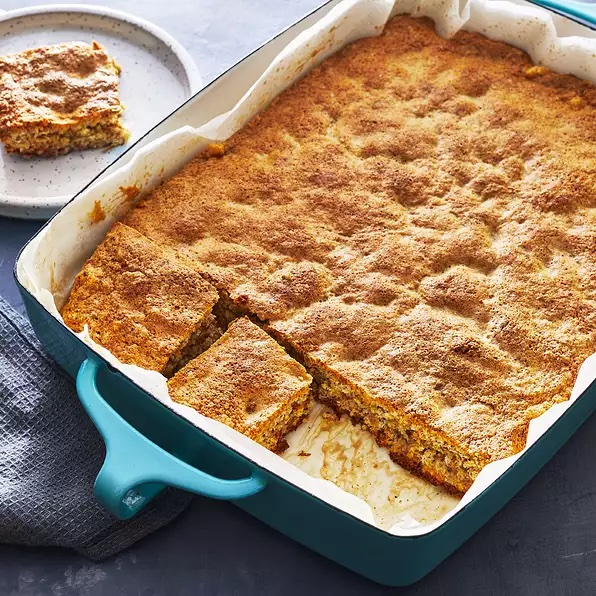

Swedish Nut Bars

Swedish Nut Bars are a delicious desert that is sure to be a crowd pleaser.
Created by Rosina, an easy to make dessert that requires only four recipes, Swedish Nut Bars a sure way to satisfy that sweet tooth. Serves twelve.
Ingredients
- 6 eggs
- 1 1/2 cups white sugar
- 3 1/2 cups finely ground almonds
- 3 teaspoons almond extract
Steps
- Preheat oven to 325 degrees F (165 degrees C). Prepare a 9 x 9 x2 inch baking pan by lining bottom with either waxed paper or parchment paper. Grease the paper.
- Separate the eggs and reserve the whites. Beat egg yolks until thick and tripled in volume. Add sugar slowly, beating until very thick. Slowly fold in nuts and extract. Beat egg whites until stiff but not dry. Fold them into the yolk mixture. Pour batter into prepared pan.
- Bake for one hour or until done. Cool in pan for 10 minutes then turn out and remove paper. Cool completely. Cut as needed.